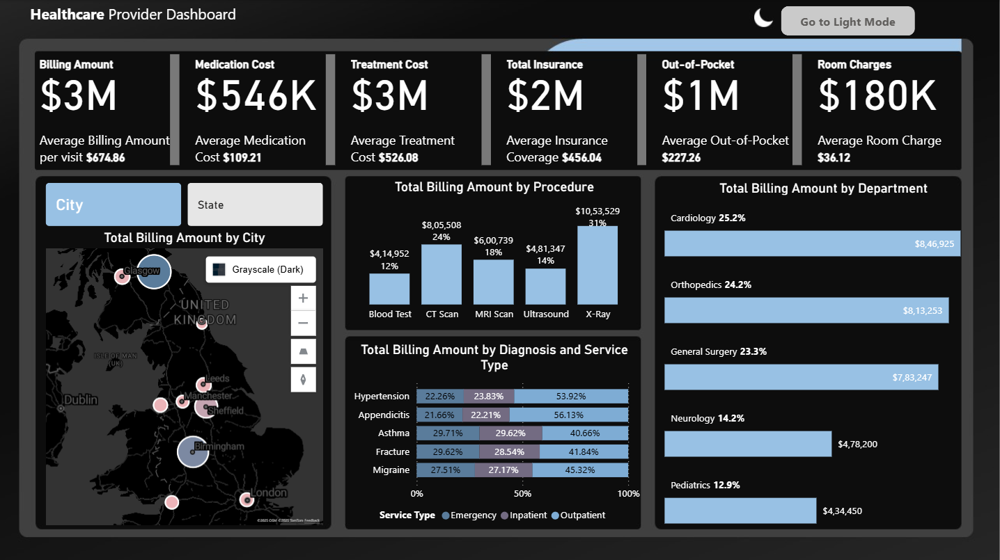
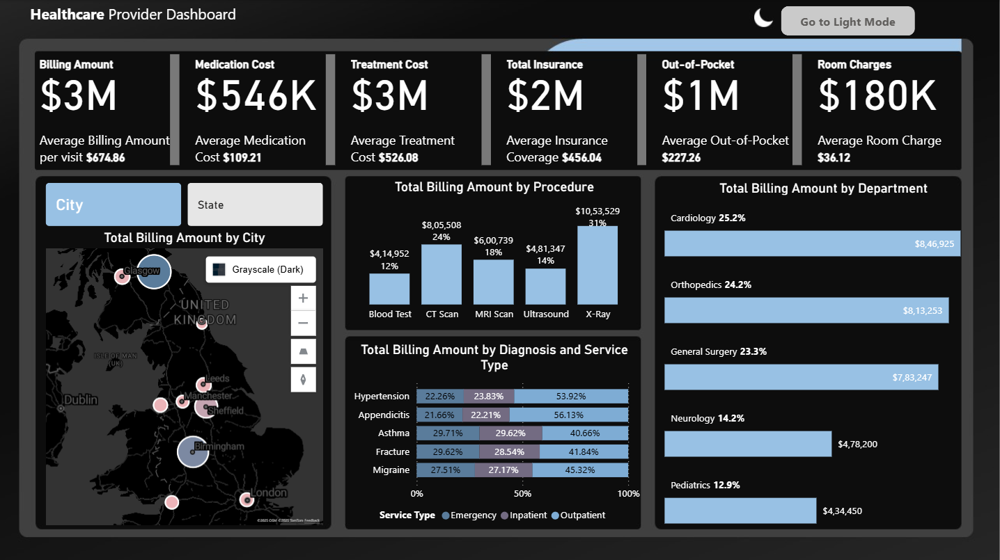
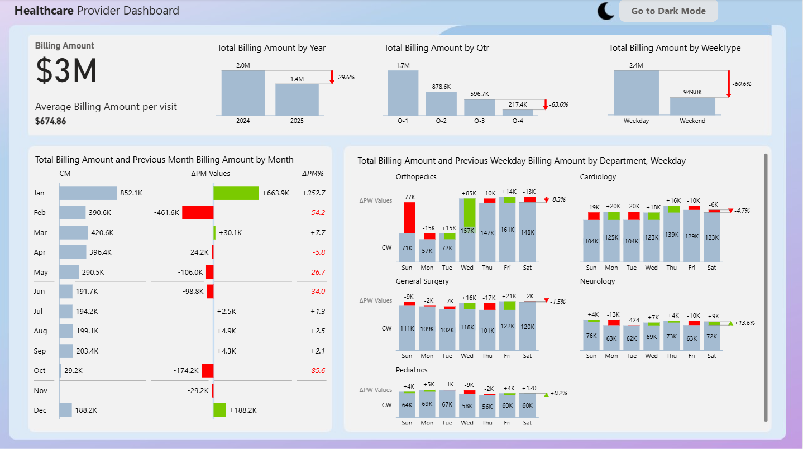
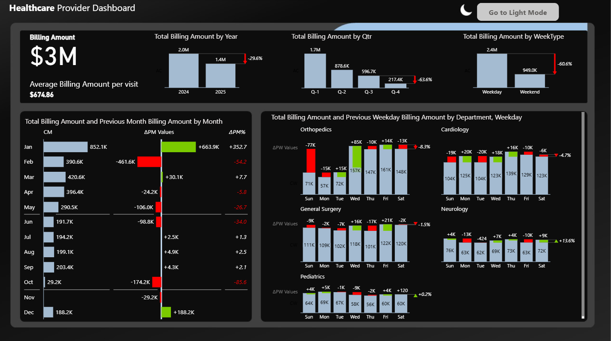
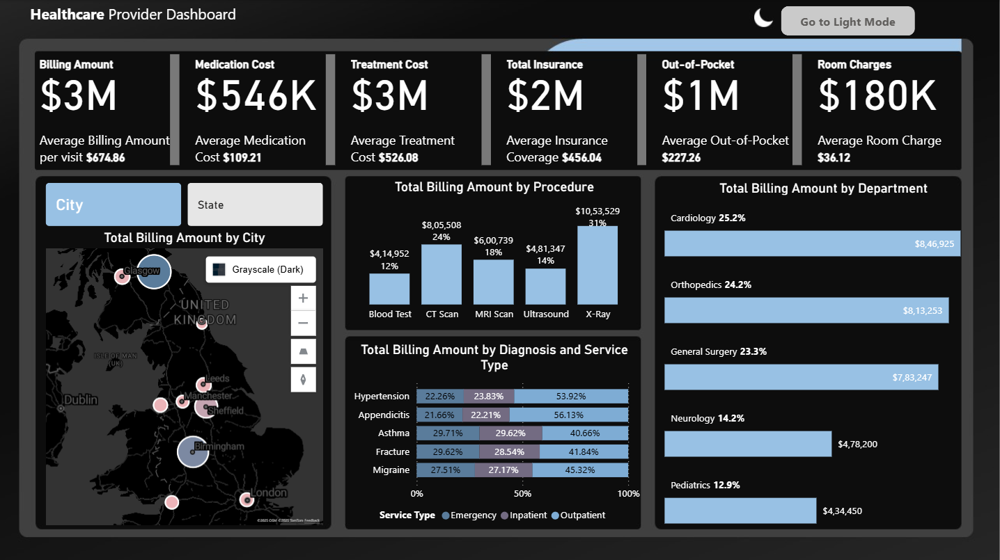

🖼️ Dashboards
Performance & Billing Insights
 

Billing & Visit Trends


A business intelligence case study improving revenue visibility and operational decision-making.
This Power BI dashboard analyzes healthcare billing, patient demographics, treatment data, and insurance coverage. The goal: empower administrators to make informed decisions that reduce costs, improve service quality, and optimize revenue.
Healthcare leaders lacked unified visibility into billing trends, departmental performance, insurance impact, and weekday vs weekend service usage. Fragmented spreadsheets made analysis slow and inaccurate.
The insights help administrators allocate resources effectively, strengthen high-revenue departments, and prepare targeted operational improvements. Weekend service expansion and focused patient engagement can improve Q3–Q4 performance.
